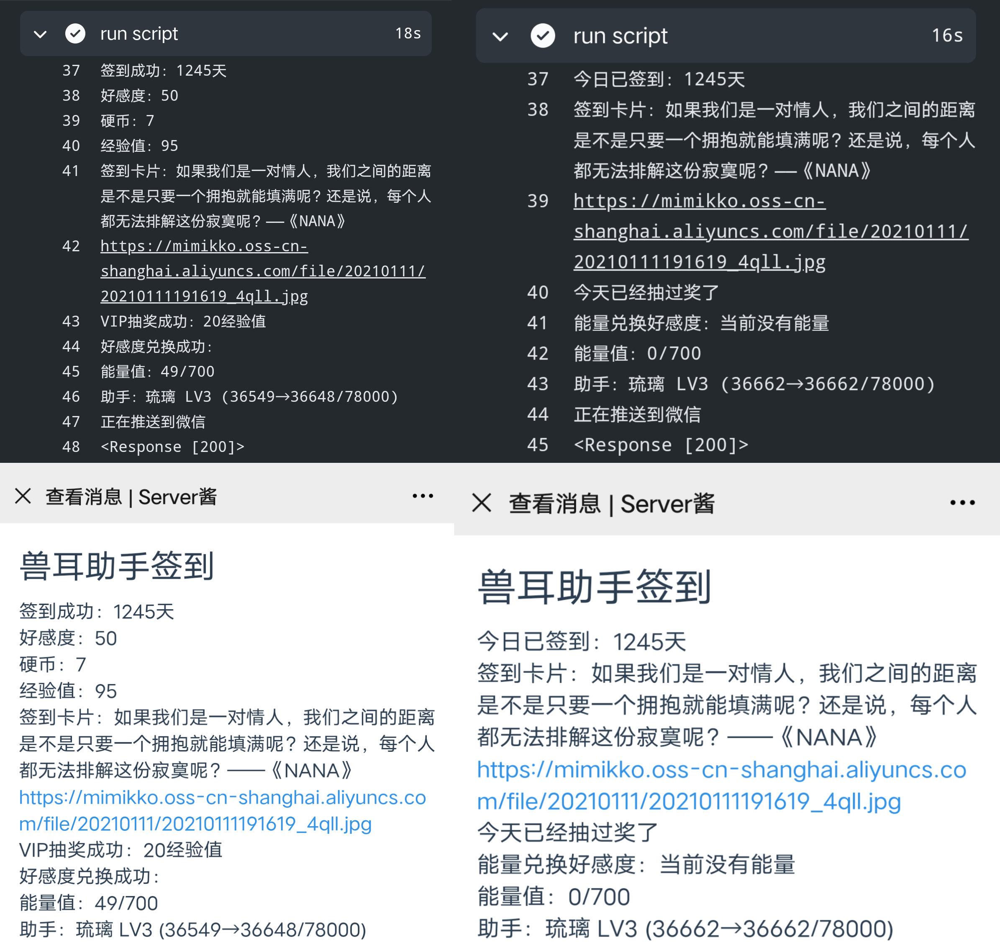
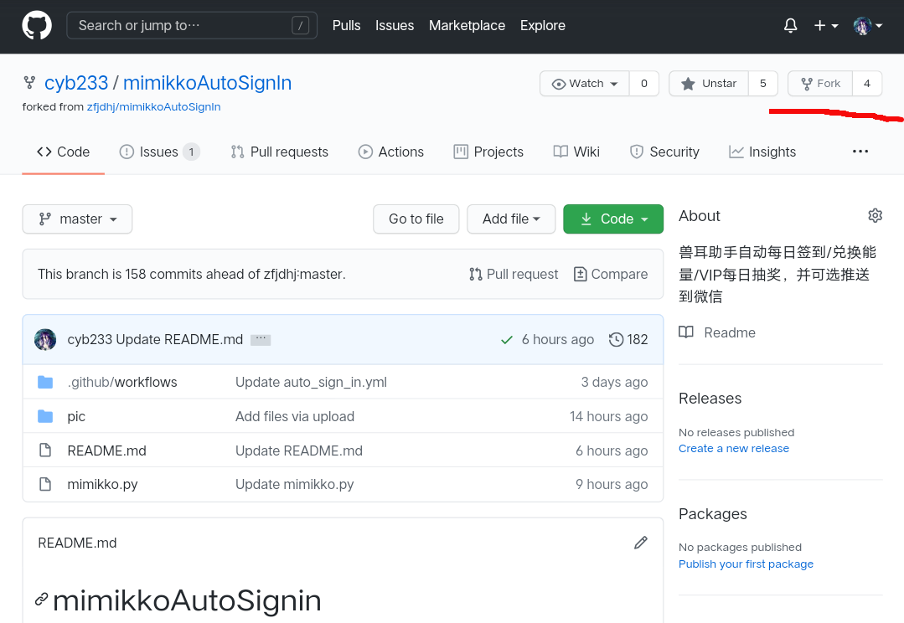
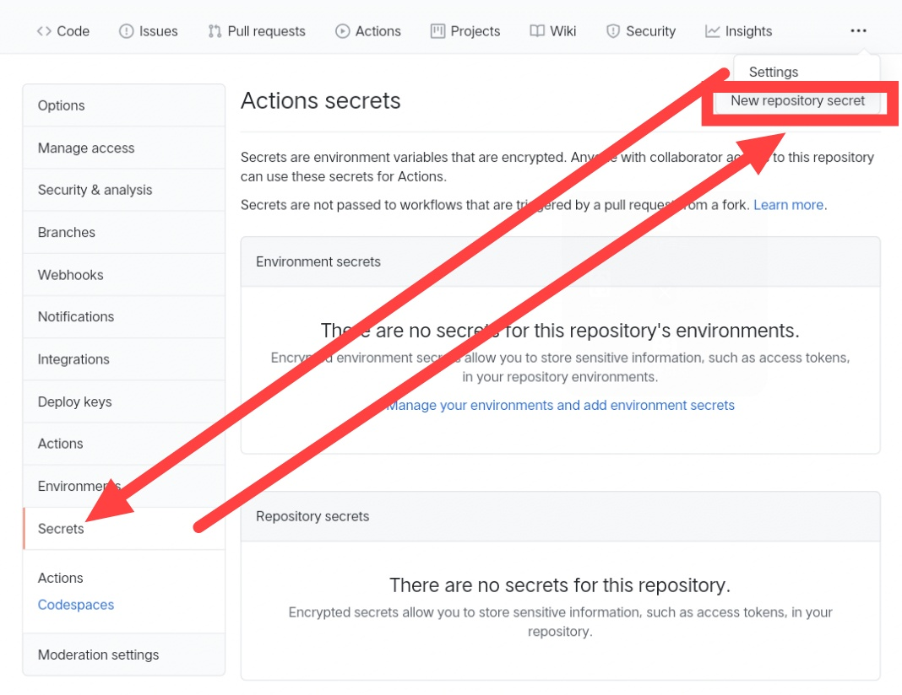
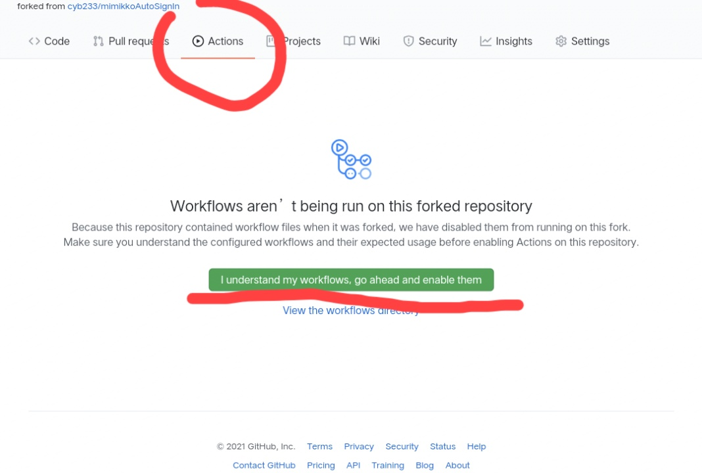
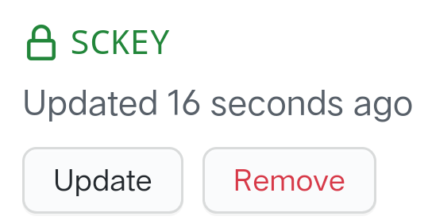

本项目地址：cyb233/mimikkoAutoSignIn
本项目使用GitHub Actions，用于兽耳助手定时每日签到/补签/兑换能量/VIP每日抽奖，并可选推送到微信

 ）
）打开本项目，并点击如图fork按钮

secret名称 必要条件 说明 LOGIN非必要 值非 False时均为True，为True时使用ID和密码进行登录，否则使用AUTHORIZATION进行验证IDLOGIN==True登录账号(邮箱或手机号) PASSWORDLOGIN==True登录密码 ENERGY非必要 详见下个表格 AUTHORIZATIONLOGIN==False验证账号用，可由抓包获取 RESIGN非必要 如需每天尝试补签最近x天，取值1~7 SCKEY非必要 微信推送，详见步骤5
建议使用ID密码登录，无技术要求，但可能会将其他设备挤下线
AUTHORIZATION值为抓包获取，需要会使用抓包软件，但不会影响其他设备
ENERGY参数用于签到及兑换能量，使用的code值为助手代码，下表是已知的code值
code ServantName 不设/不填 缺省值：梦梦奈 nonona诺诺纳 momona梦梦奈 ariana爱莉安娜 miruku米璐库 nemuri奈姆利 ruri琉璃 alpha0阿尔法零 miruku2米露可 ulrica优莉卡 giwa羲和 maya摩耶
- 注意：本项目不检查code可用性，如出现新助手而本表未更新，可自行抓取code值；由于随意输入错误助手code所可能导致的问题，本项目不负任何责任
如图
setting→secrets→new repository secret
请勿滥用GitHub Actions！
如图点击
I understand my workflows, go ahead and enable them，并手动执行一次

打开
mimikkoAutoSignIn/.github/workflows/auto_sign_in.yml在
第12行修改cron表达式，默认北京时间每天3:30,17:30执行cron表达式怎么改？请去看GitHub官方文档
在server酱官网 sc.ftqq.com 登录并复制
SCKEY在设置中创建action secrets
SCKEY
使用本项目前，您应已知悉以下内容：
您保证是因为各种无法解决的原因无法自行签到而使用本项目的(如作者本人航海专业无信号，或没有手机的学生党等)
本项目完全开源，使用时如有任何不放心请自行检阅代码（或提issues也行）
本项目使用的Secrets均保存于GitHub服务器中，且一旦保存，即使是用户自己也无法再次查看
本项目均使用GitHub Actions定时运行，理论上可以下载并本地定时运行，但我没试过
使用本项目请遵守兽耳助手《用户服务协议》，请勿使用本项目进行任何违法行为以及任何有害行为
本项目不对任何不可抗力负责，包括但不限于 罢工，自然和人为灾害，战争，网络攻击，拿服务器CPU烧烤，第三次世界大战，G胖数3，圣杯战争导致的煤气爆炸，没交网费，二哈拆房，生化危机，总是单身，异形入侵，考试挂科，三体来袭 等各种软件服务协议会写的东西
欢迎afdian赞助